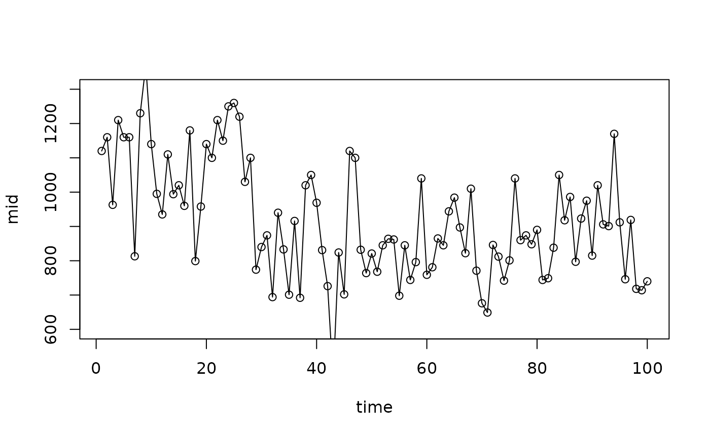
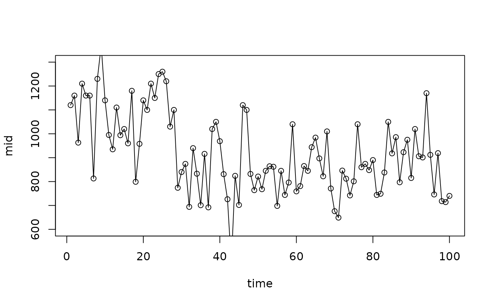
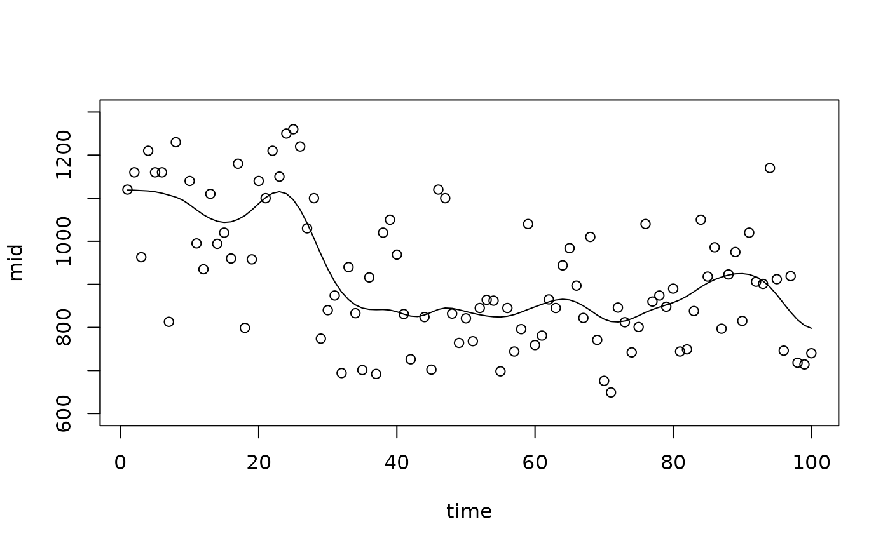
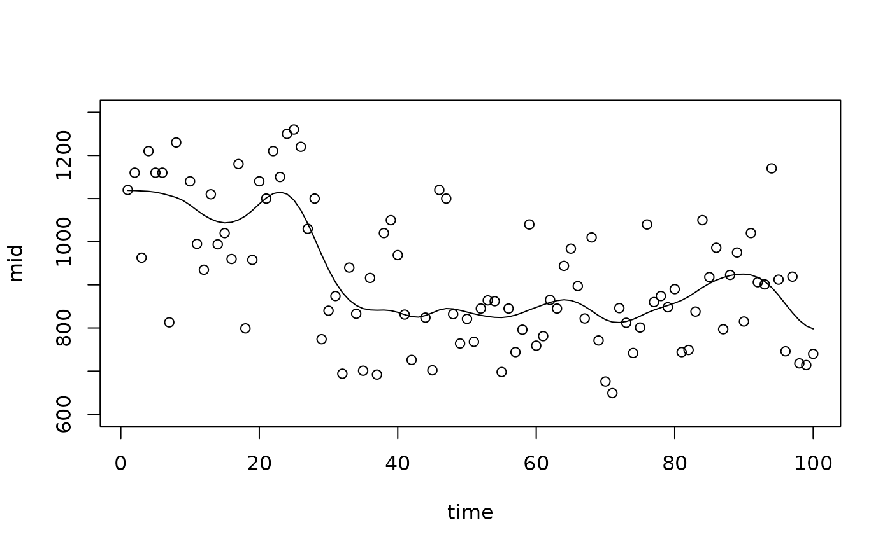

interpret() is used to fit a Maximum Interpretation Decomposition (MID) model.
MID models are additive, highly interpretable models composed of functions, each with up to two variables.
Usage
interpret(object, ...)
# Default S3 method
interpret(
object,
x,
y = NULL,
weights = NULL,
pred.fun = get.yhat,
link = NULL,
k = c(NA, NA),
type = c(1L, 1L),
frames = list(),
interactions = FALSE,
terms = NULL,
singular.ok = FALSE,
mode = 1L,
method = NULL,
lambda = 0,
kappa = 1e+06,
na.action = getOption("na.action"),
verbosity = 1L,
encoding.digits = 3L,
use.catchall = FALSE,
catchall = "(others)",
max.ncol = 10000L,
nil = 1e-07,
tol = 1e-07,
pred.args = list(),
...
)
# S3 method for class 'formula'
interpret(
formula,
data = NULL,
model = NULL,
pred.fun = get.yhat,
weights = NULL,
subset = NULL,
na.action = getOption("na.action"),
verbosity = 1L,
mode = 1L,
drop.unused.levels = FALSE,
pred.args = list(),
...
)Arguments
- object
a fitted model object to be interpreted.
- ...
for
interpret.default(), optional arguments can be provided, includingfit.intercept,interpolate.beta("iterative" for iterative smoothing, "direct" for solving the linear system, or "none" to disable interpolation),weighted.norm, andweighted.encoding. Special character aliases are also supported, such asokforsingular.okandieforinteractions. Forinterpret.formula(), any arguments to be passed on tointerpret.default().- x
a matrix or data.frame of predictor variables to be used in the fitting process. The response variable should not be included.
- y
an optional numeric vector of the model predictions or the response variable.
- weights
a numeric vector of sample weights for each observation in
x.- pred.fun
a function to obtain predictions from a fitted model, where the first argument is for the fitted model and the second argument is for new data. The default is
get.yhat().- link
a character string specifying the link function: one of "logit", "probit", "cauchit", "cloglog", "identity", "log", "sqrt", "1/mu^2", "inverse", "translogit", "transprobit", "identity-logistic" and "identity-gaussian", or an object containing two functions
linkfun()andlinkinv(). Seehelp(make.link).- k
an integer or a vector of two integers specifying the maximum number of sample points for main effects (
k[1]) and interactions (k[2]). If a single integer is provided, it is used for main effects while the value for interactions is automatically determined. AnyNAvalue will also trigger this automatic determination. With non-positive values, all unique data points are used as sample points.- type
an integer or integer-valued vector of length two. The type of encoding. The effects of quantitative variables are modeled as piecewise linear functions if
typeis1, and as step functions iftypeis0. If a vector is passed,type[1L]is used for main effects andtype[2L]is used for interactions.- frames
a named list of encoding frames ("numeric.frame" or "factor.frame" objects). The encoding frames are used to encode the variable of the corresponding name. If the name begins with "|" or ":", the encoding frame is used only for main effects or interactions, respectively.
- interactions
logical. If
TRUEand iftermsandformulaare not supplied, all interactions for each pair of variables are modeled and calculated.- terms
a character vector of term labels specifying the set of component functions to be modeled. If not passed,
termsincludes all main effects, and all interactions ifinteractionisTRUE.- singular.ok
logical. If
FALSE, a singular fit is an error.- mode
an integer specifying the method of calculation. If
modeis1, the centralization constraints are treated as penalties for the least squares problem. Ifmodeis2, the constraints are used to reduce the number of free parameters.- method
an integer specifying the method to be used to solve the least squares problem. A non-negative value will be passed to
RcppEigen::fastLmPure(). If negative,stats::lm.fit()is used.- lambda
the penalty factor for pseudo smoothing. The default is
0.- kappa
the penalty factor for centering constraints. Used only when
modeis1. The default is1e+6.- na.action
a function or character string specifying the method of
NAhandling. The default is "na.omit".- verbosity
the level of verbosity.
0: fatal,1: warning (default),2: info or3: debug.- encoding.digits
an integer. The rounding digits for encoding numeric variables. Used only when
typeis1.- use.catchall
logical. If
TRUE, less frequent levels of qualitative variables are dropped and replaced by the catchall level.- catchall
a character string specifying the catchall level.
- max.ncol
integer. The maximum number of columns of the design matrix.
- nil
a threshold for the intercept and coefficients to be treated as zero. The default is
1e-7.- tol
a tolerance for the singular value decomposition. The default is
1e-7.- pred.args
optional parameters other than the fitted model and new data to be passed to
pred.fun().- formula
a symbolic description of the MID model to be fit.
- data
a data.frame, list or environment containing the variables in
formula. If not found in data, the variables are taken fromenvironment(formula).- model
a fitted model object to be interpreted.
- subset
an optional vector specifying a subset of observations to be used in the fitting process.
- drop.unused.levels
logical. If
TRUE, unused levels of factors will be dropped.
Value
interpret() returns an object of class "mid". This is a list with the following components:
- weights
a numeric vector of the sample weights.
- call
the matched call.
- terms
the term labels.
- link
a "link-glm" or "link-midr" object containing the link function.
- intercept
the intercept.
- encoders
a list of variable encoders.
- main.effects
a list of data frames representing the main effects.
- interacions
a list of data frames representing the interactions.
- ratio
the ratio of the sum of squared error between the target model predictions and the fitted MID values, to the sum of squared deviations of the target model predictions.
- fitted.matrix
a matrix showing the breakdown of the predictions into the effects of the component functions.
- linear.predictors
a numeric vector of the linear predictors.
- fitted.values
a numeric vector of the fitted values.
- residuals
a numeric vector of the working residuals.
- na.action
information about the special handlings of
NAs.
Details
The MID model approximates a target model's prediction function \(f(\mathbf{x})\), or values of the response variable \(\mathbf{y}\). This model, denoted as \(\mathcal{F}(\mathbf{x})\), has the following structure: $$\mathcal{F}(\mathbf{x}) = f_\phi + \sum_{j} f_{j}(x_j) + \sum_{j<k} f_{jk}(x_j, x_k)$$ where \(f_\phi\) is the intercept, \(f_{j}(x_j)\) is the main effect of feature \(j\), and \(f_{jk}(x_j, x_k)\) is the second-order interaction effect between features \(j\) and \(k\).
To ensure that the decomposed components are unique, they are fitted under the centering constraints: each main effect's average is constrained to be zero, and each interaction effect's conditional averages are also constrained to be zero. The model is fitted by minimizing the squared error between the target, \(f(\mathbf{x})\) or \(\mathbf{y}\), and the surrogate \(\mathcal{F}(\mathbf{x})\), which is typically evaluated on a representative dataset.
References
Asashiba R, Kozuma R, Iwasawa H (2025). “midr: Learning from Black-Box Models by Maximum Interpretation Decomposition.” 2506.08338, https://arxiv.org/abs/2506.08338.
Examples
# Fit a MID model as a surrogate for another model
data(cars, package = "datasets")
model <- lm(dist ~ I(speed^2) + speed, cars)
mid <- interpret(dist ~ speed, cars, model)
plot(mid, "speed", intercept = TRUE)
points(cars)
 # Fit a MID model as a standalone predictive model
data(airquality, package = "datasets")
mid <- interpret(Ozone ~ .^2, data = airquality, lambda = .5)
#> 'model' not passed: response variable in 'data' is used
plot(mid, "Wind")
# Fit a MID model as a standalone predictive model
data(airquality, package = "datasets")
mid <- interpret(Ozone ~ .^2, data = airquality, lambda = .5)
#> 'model' not passed: response variable in 'data' is used
plot(mid, "Wind")
 plot(mid, "Temp")
plot(mid, "Temp")
 plot(mid, "Wind:Temp", main.effects = TRUE)
plot(mid, "Wind:Temp", main.effects = TRUE)
 data(Nile, package = "datasets")
nile <- data.frame(time = 1:length(Nile), flow = as.numeric(Nile))
# A flexible fit with many knots
mid <- interpret(flow ~ time, data = nile, k = 100L)
#> 'model' not passed: response variable in 'data' is used
plot(mid, "time", intercept = TRUE, limits = c(600L, 1300L))
points(x = 1L:100L, y = Nile)

# A smoother fit with fewer knots
mid <- interpret(flow ~ time, data = nile, k = 10L)
#> 'model' not passed: response variable in 'data' is used
plot(mid, "time", intercept = TRUE, limits = c(600L, 1300L))
points(x = 1L:100L, y = Nile)
data(Nile, package = "datasets")
nile <- data.frame(time = 1:length(Nile), flow = as.numeric(Nile))
# A flexible fit with many knots
mid <- interpret(flow ~ time, data = nile, k = 100L)
#> 'model' not passed: response variable in 'data' is used
plot(mid, "time", intercept = TRUE, limits = c(600L, 1300L))
points(x = 1L:100L, y = Nile)

# A smoother fit with fewer knots
mid <- interpret(flow ~ time, data = nile, k = 10L)
#> 'model' not passed: response variable in 'data' is used
plot(mid, "time", intercept = TRUE, limits = c(600L, 1300L))
points(x = 1L:100L, y = Nile)
 # A pseudo-smoothed fit using a penalty
mid <- interpret(flow ~ time, data = nile, k = 100L, lambda = 100L)
#> 'model' not passed: response variable in 'data' is used
plot(mid, "time", intercept = TRUE, limits = c(600L, 1300L))
points(x = 1L:100L, y = Nile)

# A pseudo-smoothed fit using a penalty
mid <- interpret(flow ~ time, data = nile, k = 100L, lambda = 100L)
#> 'model' not passed: response variable in 'data' is used
plot(mid, "time", intercept = TRUE, limits = c(600L, 1300L))
points(x = 1L:100L, y = Nile)
